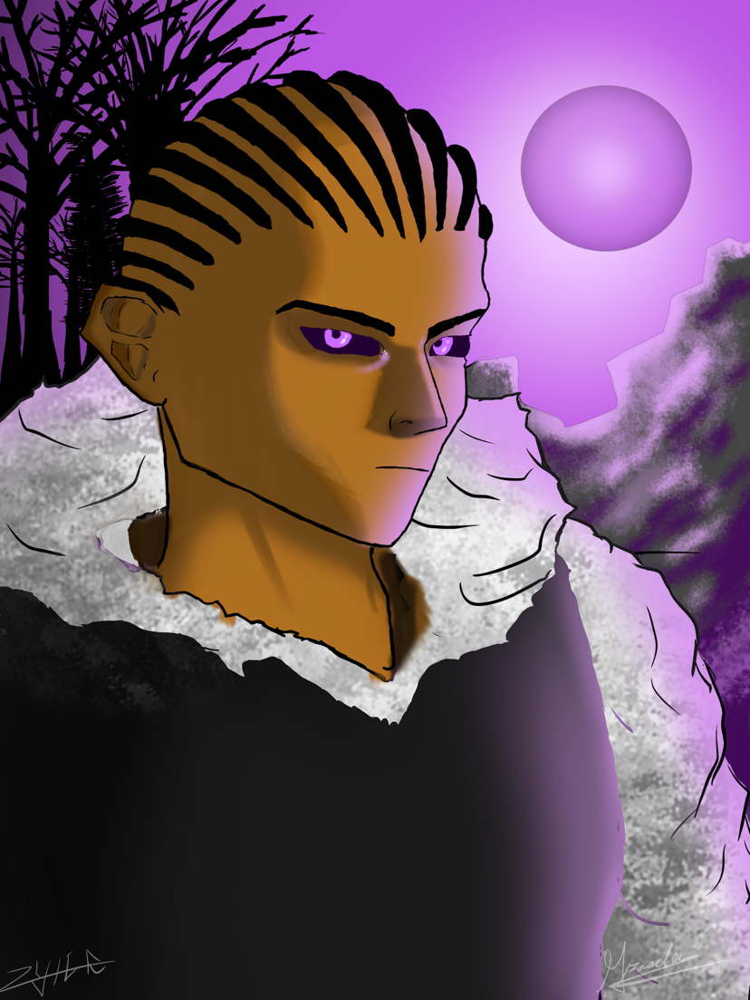
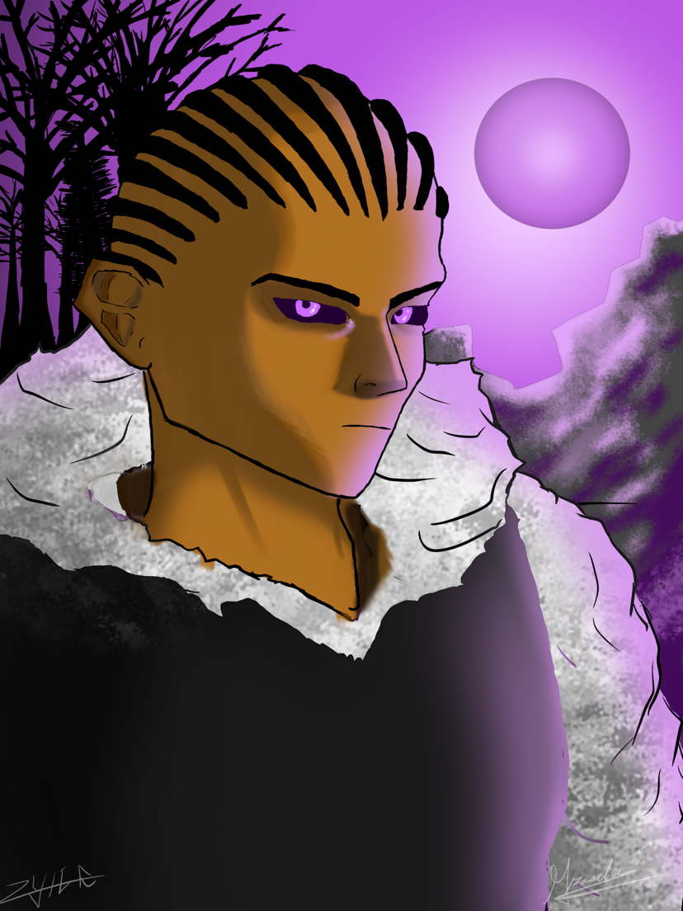
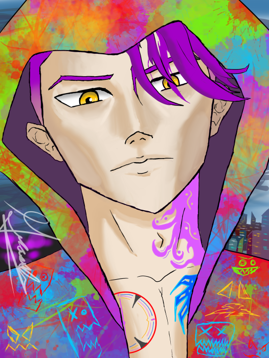
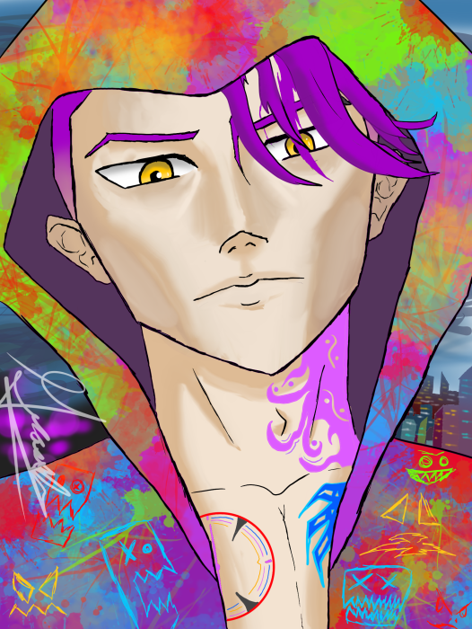
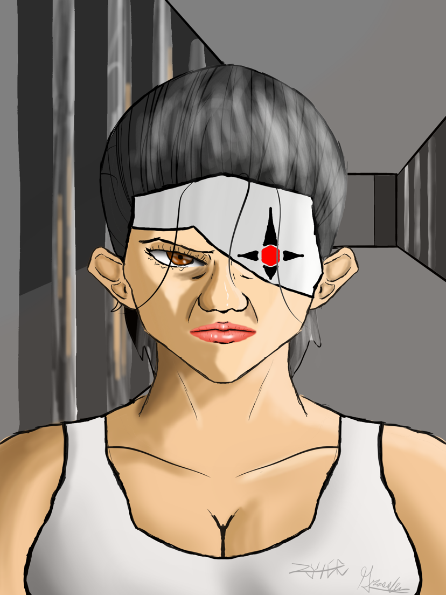
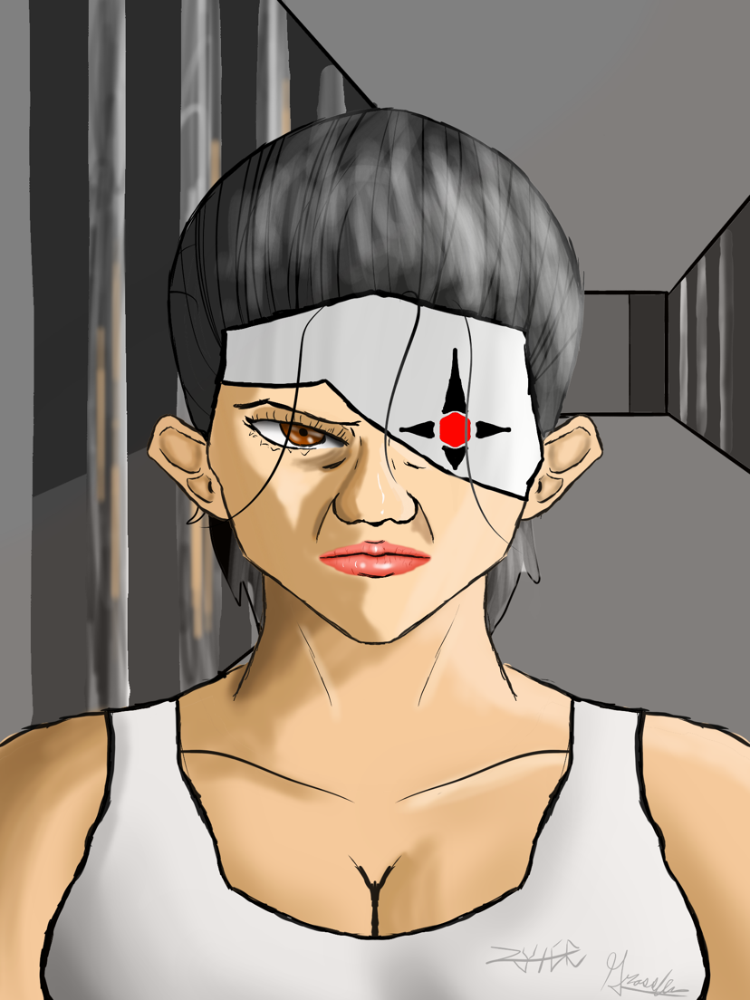

My name is Grassley Chen. I am a student at Brooklyn College. I've always been captivated by art and media. Growing up watching shows on PBS Kids, Cartoon Network, and Vortex, as well as reading graphic novels, sparked my early interest. I’ve always been drawn to stories that explore darker, grittier and mature themes. Growing up being immersed in Teen Titans, the DC Injustice story, and Games from Artix. These pieces of media served as the basis for many of my made-up stories. I often find myself maladaptive daydreaming of scenes where my OCs endure significant tragedy. Dark, tragic narratives resonate with me on a deep level, and I love combining elements of visual arts and media to bring these kinds of stories to life! On this page, you can find some of the personal projects that I've put out, such as, some of my digital illustrations, my Scratch projects, and a short comic The Scars Project, all of which can be explored below!
Recently, I've gotten into some content creation. I've been using the free editing tool CapCut to enhance my videos. As an artist, I am always trying to explore different ways to create, so finding another way to do so through digitized content was inspiring! I definitely want to continue enhancing my knowledge in this medium of creation and combine it with the other art forms that I already love!
Outside of my artistic interests, I am a mental health advocate. As someone who has been struggling with my mental health, specifically with anxiety, I want to be someone who can help others who might also be having internal battles. I want to be able to help get rid of the stigmatization of mental health struggles and learn to see how I can be an even better advocate and contribute to communities that foster openness, patience, and genuine growth!

 


.png) 



 

Click to view The SCARS Project
Click here to view my profile on Scratch
Here are some of the Scratch projects I'm most proud of:
Arcane

Coraline

Cyberpunk Edgerunners

Arrow